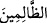

yardım eden ortakları mı var?” Çünkü müşrikler bunlardan başka birşey bilmezler.
Halbuki Allah Teâlâ, böyle bir şeye izin vermekten, böyle bir şeyi emretmekten
münezzehtir, pek yücedir.
Âyette “din” kelimesi, müşâkele lafzî uyum yoluyla zikredilmiştir. Yoksa Allah’ın izni
olmayan şeyin “din” olarak algılanması söz konusu değildir. Dolayısıyla burada
şeytanların uydurduğu şeye “din” denmesi, Allah’ın dînine mukabil olarak zikredildiği
için sadece lafzî uyumdan ibârettir. Bu duruma Arap edebiyatında “müşâkele”
denmektedir. Yahut şirki kabul ve dirilişi inkârdan ibaret olan bu bâtıl düşünceye “din”
denmesi, alay ve küçümseme maksadlıdır.
Âyette bahsedilen “şürekâ/ortaklar”ın, putlardan ibaret olduğu da söylenmiştir. Bu
durumda “em” edâtının başındaki “hemze” inkâr içindir. Zîrâ hiçbir şey anlamayan
cansız varlıkların ortaya doğru bir din koyması düşünülemez. Allah Teâlâ da zâten
onlara böyle bâtıl bir dîni asla meşrû kılmamıştır.
Bu bâtıl dînin putlara nisbet edilmesi, müşriklerin onları Allah’a ortak
koşmalarındandır. Putlar cansız ve akılsız varlıklar olup her türlü faaliyetten uzak
oldukları halde böyle bir dîni getirme işinin putlara isnad edilmesi, fiilin sebebe isnad
edilmesi kabilinden, isnâd-ı mecâzîdir. Çünkü bu putlar, müşriklerin sapıtıp fitneye
düşmelerine sebeptir. Nitekim Allah Teâlâ: “Onlar (putlar) insanlardan birçoğunu
saptırdılar” (İbrahim 14/36) buyurarak bu gerçeğe işâret etmektedir.
“Eğer erteleme sözü olmasaydı” azâbın ertelenmesine dâir geçmiş bir karar
olmasaydı yahut bu nihâî hükmün kıyâmet günü verileceğine dâir bir söz olmasaydı
“derhal aralarında hüküm verilirdi.” Kâfirlerle mü’minler ya da müşriklerle onların
ortakları arasında karar verilir, her bir grup lâyık olduğu karşılığı bulurdu. Ancak
onlara kıyâmete kadar mühlet verilmiştir.”
Âyette geçen “fasl” kelimesi, hak ile bâtıl arasını ayırmak için verilen hükmü ifâde
eder. Kamus’ta böyle denmektedir. “Fasl günü” ise hak ile bâtılın zâhir olacağı, hakkın
bâtıldan ayrılacağı, insanlar arasında hüküm verilerek haklı ve haksızın birbirinden
ayrılacağı gündür. Müfredât’ta böyle geçmektedir.
“Şüphesiz zalimlere” âhirette “can yakıcı” ıstırabı kişiyi kavrayıp kuşatan “bir azap
vardır.” Bu, devamlı içlerini yakan ve sonu olmayan azaptır. Burada müşriklerin
zulmünü tescil ve mâhiyeti bilinmeyen bu elim azâbın onları kaplamasının sebebinin,
zulümleri ve zulme iyice dalmaları olduğuna delâlet için “__WORD__ /hüm” zamiri yerine açık
bir şekilde “__WORD__/zâlimîn” ismi getirilmiştir.
Bu âyeti kerîmede şu hususlara işâret edilmektedir:
1- Kâfirlerin nefisleri, dîni hevâ ve hevesleri ile istîlâ ettiklerinden ruh ve kalplere
Allah’ın rızasının aksine şerîata muhalefet ve tabiata muvafakat gibi şeyler ortaya
koymuşlardır. Bu durum harb ehlinin hükümran oldukları anda Müslümanların dîninde
olmayan domuz eti yeme, şarab içme, zünnar bağlama gibi şeyleri Müslümanlara revâ
görmeleri gibidir. Evet gönülden Allah’a yönelmeli ki şer bertaraf olup durum İslam’ın